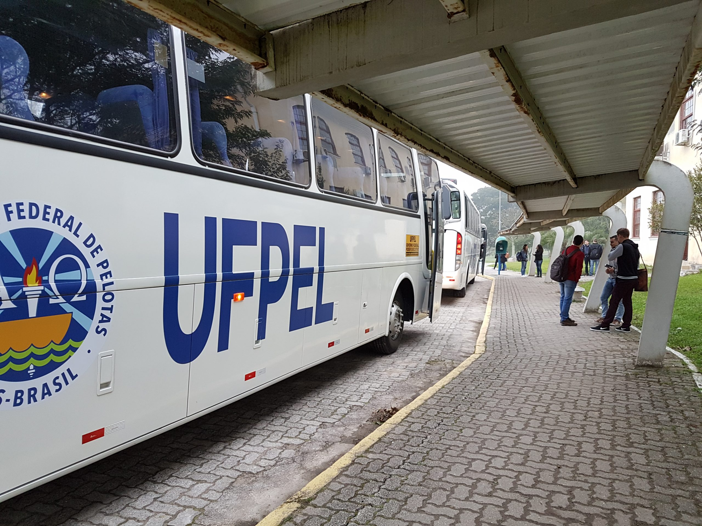
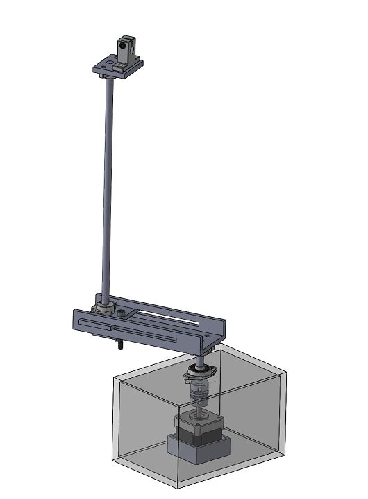
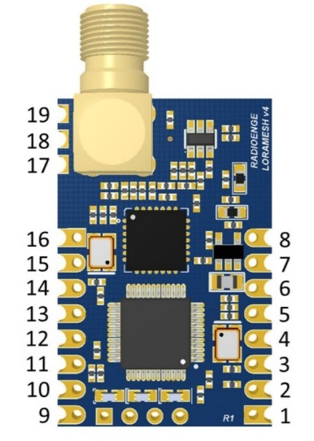

Iniciação científica e projetos de ensino.
Vehicle Tracking System
Desenvolvimento de um sistema de rastreamento real-time da frota de ônibus da universidade.
Desenvolvimento de material didático
Desenvolvimento de material didático para a disciplina de antenas, utilizando modelos 3D e viabilização de um protótipo de spectrum analyzer.